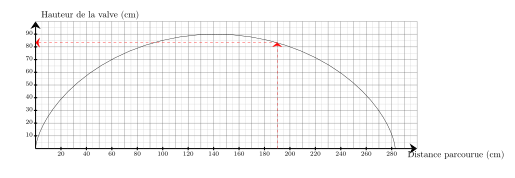
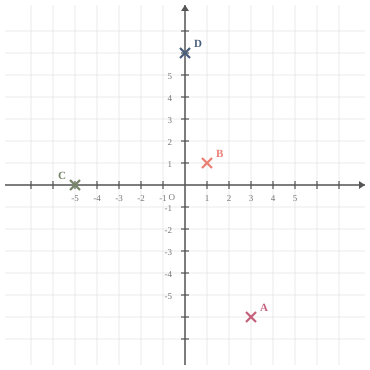

Sur le graphique ci-dessus, on a représenté la hauteur de la valve d'une roue de vélo en fonction de la distance parcourue en $\text{cm}$ lors d'un tour complet. Quelle est la hauteur de la valve lorsque la distance parcourue est de $190\text{ cm}$ ?
La hauteur de la valve lorsque la distance parcourue est de $190\text{ cm}$ est de $83\text{ cm}$.

03
Question
Convertir $9\,851\,\text{s}$ en heures, minutes et secondes.
On utilise le théorème de Pythagore dans le triangle $WXY$, rectangle en $X$.
On obtient :
$\begin{aligned}
WX^2+XY^2&=WY^2\\
XY^2&=WY^2-WX^2\\
XY^2&=10^2-3^2\\
XY^2&=100-9\\
XY^2&=91\\
XY&={\color{#8B3C52}\boldsymbol{\sqrt{91}}}
\end{aligned}$
Placer les points suivants : $A(3\;;\;-6)$ ; $B(1\;;\;1)$ ; $C(-5\;;\;0)$ et $D(0\;;\;6)$.
Les points sont placés aux coordonnées indiquées :

04
Question
Sur la figure suivante :
$\leadsto O$ est sur $[NL]$,
$\leadsto P$ est sur $[NM]$, $\leadsto$ les droites $(LM)$ et $(OP)$ sont parallèles. Écrire la double égalité de Thalès.
Dans le triangle $LMN$ :
$\leadsto$ $O\in[NL]$,
$\leadsto$ $P\in[NM]$,
$\leadsto$ $(LM)//(OP)$,
donc d'après le théorème de Thalès, les triangles $LMN$ et $OPN$ ont des longueurs proportionnelles.
$\dfrac{NO}{NL}=\dfrac{NP}{NM}=\dfrac{OP}{LM}$
Remarque On pourrait aussi écrire : $\dfrac{NL}{NO}=\dfrac{NM}{NP}=\dfrac{LM}{OP}$
01
Question
Compléter avec le signe < ou >. $7{,}21 \quad \ldots\ldots \quad7{,}4$
Choisis le calcul qui permet de résoudre l'équation suivante :
Pour résoudre $4x-9=10$ :
A. $\dfrac{10+9}{4}$
B. $\dfrac{10}{4}+9$
C. $10\times 4+9$
D. $(10-4)+9$
$4x-9=10$
On ajoute $9$ : $4x=10+9$.
Puis on divise par $4$ : $x=\dfrac{10+9}{4}$.
Bonne réponse : A.
03
Question
Compléter. Un angle droit mesure … $^\circ$.
Un angle droit mesure ${\color{#8B3C52}\boldsymbol{90}}^\circ$.
04
Question
Exprimer $\cos(\widehat{VUW})$ de deux manières :
$$
\cos(\widehat{VUW})=\dfrac{\ldots}{\ldots}
\qquad\text{et}\qquad
\cos(\widehat{VUW})=\dfrac{\ldots}{\ldots}
$$
$VUW$ est rectangle en $V$ donc :
$$
\cos\left(\widehat{VUW}\right)
= {\color{#8B3C52}\mathbf{\dfrac{VU}{UW}}}.
$$
$VUT$ est rectangle en $T$ donc :
$$
\cos\left(\widehat{VUW}\right)
= {\color{#8B3C52}\mathbf{\dfrac{UT}{VU}}}.
$$